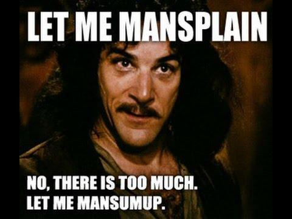

Luke Stranahan is an engineer by trade and an armed patriot by inclination. He writes for Return of Kings as a leisure pursuit and an attempt to do his part to help reverse the slide into moral decrepitude of modern society. Follow him on Twitter.


Cosmopolitan, bastion of feminine and progressive thought, such as it is, recently published an article entitled “It’s Time to Talk About What Guns Have to Do With Dating.” Using the progressive tactic of declaring whatever issue they have with a non-controversial topic to be a “conversation,” and thus worthy of discussion, this hit piece comes with a cute, heart-accented dialogue flow chart of the “conversation” a girl is supposed to have to ensure her beau is not a Bad Man With A Gun.
Replete with a few tear-jerking personal anecdotes and blabbering on for more than double the length of your average ROK article, the author managed to get damn near everything wrong (even the Kimar they used as their title picture is a blanks shooting training gun), but here’s three things they really screwed up.
Citing research showing that men are three times more likely to own a gun than women, the author immediately casts the men as the gun owners, and the women then follow as the victims. Her logic follows that all women need to have the “conversation” with the men they are dating about gun safety, exemplified by hypothetically finding a gun in a sock drawer.
“What the hell are you doing in my sock drawer?” is the only question that this should bring up. However, this subtly leads into the last point, escalating from the neutral “dating” to “boyfriend and girlfriend living together” and shouldn’t someone who is living with you deserve to know about any guns you have? Although the article is titled about dating, even the Narrative understands that you don’t get to try to change a man until you’ve got your claws into his hide in a full relationship, hence the bait and switch.
The interrogative style of their flow chart leads women to probe to see if her man has a gun, if he bought it legally (and passed a background check), if he bought it for some “safe” reason like recreation or tradition or not, and if it is stored locked up or not. Any failure to follow the scripted answer is a “red flag” and will presumably get you dumped, though any girl throwing you shit tests out of Cosmo ought to be kicked to the curb on general principle.
The only answer you ever need to give a girl asking you if you own a gun is “Yeah. Wanna go shooting?” I teach people to shoot as a civic activity, and a lot of them are girls and women. Nothing says equality and true “girl power” like unlocking a skill in a lady that she can rely on for the rest of her life and not have to fear the dark any more. It’s empowering and equalizing for them, breaks them out of the “victim” role, and it’s a hell of a date if you do it right.
More girl power in this picture than that entire magazine.
Black frying pans, just like black rifles, are more evil
A few stories follow the above chart, all designed to show that a woman lost her life because of a gun and, thus, guns are bad and shouldn’t be allowed to men. “How the hell did he get a gun?” is the question the article suggests you ask each time you hear about a woman being killed by her “intimate partner.”
That’s the wrong question. The question you ought to ask is “What made him murder her, and when did he lose the basic respect for human life and others around him that made him think murder was anything other than a heinous, forbidden crime only monsters commit?”
If you have a sociopath for a boyfriend, and he wants to kill you, you’re just as dead if he kills you with a frying pan than with a gun. Whenever someone kills someone else with something other than a gun, it’s a tragedy, but, when it’s with a gun, it’s a call to action to ban them.
This isn’t a logical failing of progressives; it’s not that they hate guns much more than they hate knives, or nooses, or sharp rocks, it’s that they hate what a gun gives its law-abiding owner, which is, of course, freedom from oppression. No other item allows you the ability to back up your independent thought and your publicly articulating it than the ability to deny anyone the courtesy of stopping you.
Yes, it’s a tragedy whenever someone innocent is murdered, but it is not the fault of the tool, only the wielder. Every time the Pavlovian reflex of the left twitches to enact more gun control instead of figuring out how we can stop people wanting to murder in the first place, it betrays their true desires of control over compassion.
The last part of the article deals with legislation and references the supposed “gun show loophole,” although the left has FINALLY figured out that the “loophole” is simply that private sales are not subject to federal background check requirements. The author then insinuates that it is legal to sell a gun privately to someone who is not legally allowed to own it, which is completely false, in an attempt to paint all people who engage in private sales as enablers of men who would murder their girlfriends.
Straw Purchases are illegal, as is selling a gun to someone who cannot own it, whether you know or not.
The author finally segues into claiming that single women are not as protected as married women, or women who are part of a couple living together, because violence against the former is simply misdemeanor assault while against the latter is domestic violence. Under the Brady Bill background check laws of 94, the NICS check system will flag anyone with a misdemeanor domestic violence charge and prevent the check from going through, but “normal” misdemeanor assault is not flagged.
The logical thrust is that “boyfriends” ought to be added to the Brady Law so that the inconsistency can be resolved, however the Constitutionality of depriving someone of a right enshrined in the Bill of Rights for a misdemeanor is highly suspect, even to the point of Supreme Court Justice Clarence Thomas questioning it.
Constitutionality aside, this serves as an example of the continually encroaching control that feminists want over men, even men who aren’t married to, or shacked up with, them. Imagine that you take a girl out on a couple dates, you both get drunk, she gets pissed and decks you one. Any physical response you might be tempted to give could not ONLY be grounds for assault charges, but she could claim you as a “boyfriend” and get you slapped with a domestic violence conviction and suspension of your firearms rights for life.
The article closes with a condescending little infographic with some of the more simplistic pro-gun arguments and their suggested talking points on how to defeat your argument and “win,” turning your potential date into a shrill leftist robot. It also contains a list of red-flag truisms that anyone would recognize as hallmarks of a dangerously unbalanced person.

There’s no need to be a “gunsplainer” and to engage in her pointless debates. When she asks why you own a gun, tell her it’s your Constitutional right and you don’t need any other reason. If she doesn’t like it, she can amend the Constitution through its legal process, or she can hit the bricks. Whoever heard of an unarmed King anyway?
Read More: 4 Bogus Excuses Barack Obama Is Using To Disarm The American People
{kind=link}
{kind=link}